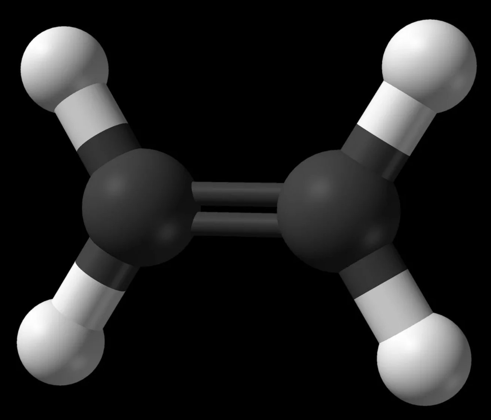
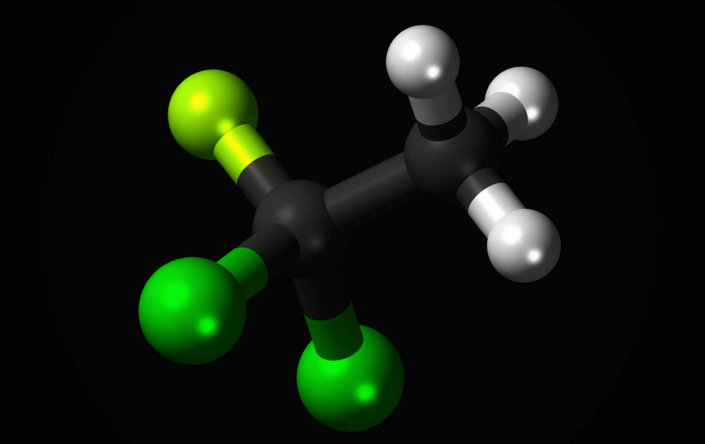

Алкены
Алкены – это непредельные (ненасыщенные) нециклические углеводороды, в молекулах которых присутствует одна двойная связь между атомами углерода С=С. Наличие двойной связи между атомами углерода очень сильно меняет свойства углеводородов.
Образуют гомологический ряд с общей формулой:
СnH2n

В состоянии sp2-гибридизации состояние атома углерода можно представить как:
1SSP2SP2SP2P
Физические свойства:
- Температуры плавления и кипения алкенов:
- Увеличиваются с молекулярной массой
- Увеличиваются с длиной главной углеродной цепи
- При нормальных условиях алкены:
- С этилена до бутена — газы
- С пентена до гептадецена включительно — жидкости
- Свойства растворимости:
- Алкены не растворяются в воде
- Но хорошо растворяются
в органических растворителях
Химические свойства:
- Алкены химически активны
- Свойства определяются наличием двойной связи
- Для алкенов характерны реакции электрофильного присоединения
- Также характерны реакции радикального присоединения
- Алкены легко вступают в реакции окисления
- Гидрируются с сильными восстановителями
- Гидрируются с водородом
- Способны к реакции радикального замещения
